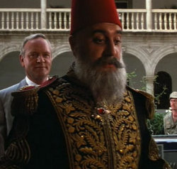
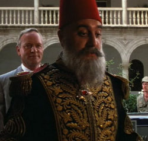

Scene Locations in Spain
In 1938, after discovering the second marker in Venice, Jones sent Marcus Brody ahead to Iskenderun to meet up with Sallah and start the search for the Holy Grail while Jones went with Elsa Schneider to rescue Henry Jones, Sr.. Brody and Sallah met up at the train station, but Brody was kidnapped by Nazi agents, who took the map. Days later, Sallah met up with Jones and his father in the town, and drove them out to the desert, where they spied Walter Donovan's convoy and attempted a rescue.[http://indianajones.wikia.com/]
Iskenderun Train Station
In 1938, after discovering the second marker in Venice, Jones sent Marcus Brody ahead to Iskenderun to meet up with Sallah and start the search for the Holy Grail while Jones went with Elsa Schneider to rescue Henry Jones, Sr.. Brody and Sallah met up at the train station, but Brody was kidnapped by Nazi agents, who took the map. Days later, Sallah met up with Jones and his father in the town, and drove them out to the desert, where they spied Walter Donovan's convoy and attempted a rescue.[http://indianajones.wikia.com/]


Henry Jones Sr. scares the birds away with an umbrella
"While escaping from some Nazi fighter planes, Jones and his father climbed down to the shores of the sea after losing their stolen car. The elder Jones used his umbrella to stir up the sea birds, causing the last plane to crash.[http://indianajones.wikia.com/]


Rolls Royce scene
When Walter Donovan and his Nazi colleagues sought to enter Hatay to search for the Holy Grail in 1938, they needed the Sultan's permission to cross Hatay's border. The Sultan, who valued technology over mysticism, did not believe in the legend of the Grail, and considered it a foolish quest, but was willing to allow them do as they wished in exchange for suitable compensation. He turned down the gold and jewels 'donated' by the finest families in Germany. However, he allowed them passage and even lent them some of his troops - in exchange for Donovan's Rolls-Royce Phantom II staff car.

In return for the prize automobile, the Sultan promised to provide provisions and troops for the expedition to recover the Grail, including camels, horses, and tanks.[http://indianajones.wikia.com/]
 
